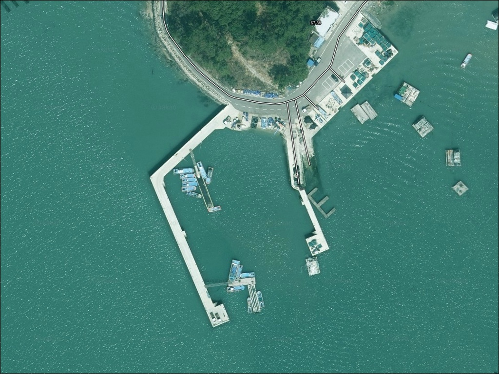
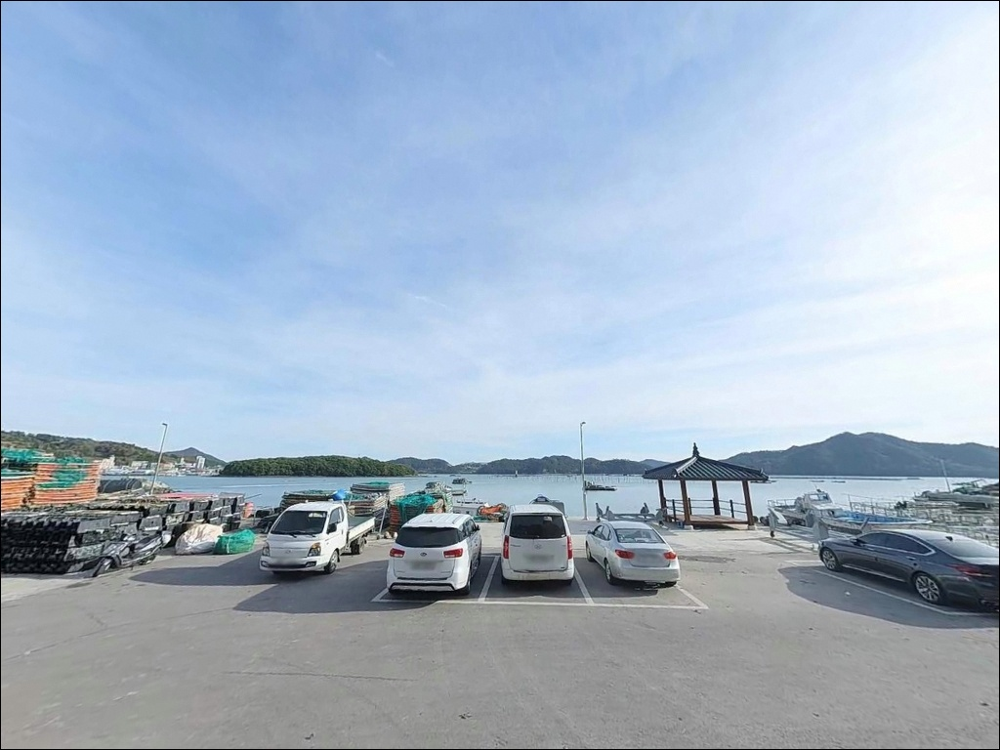
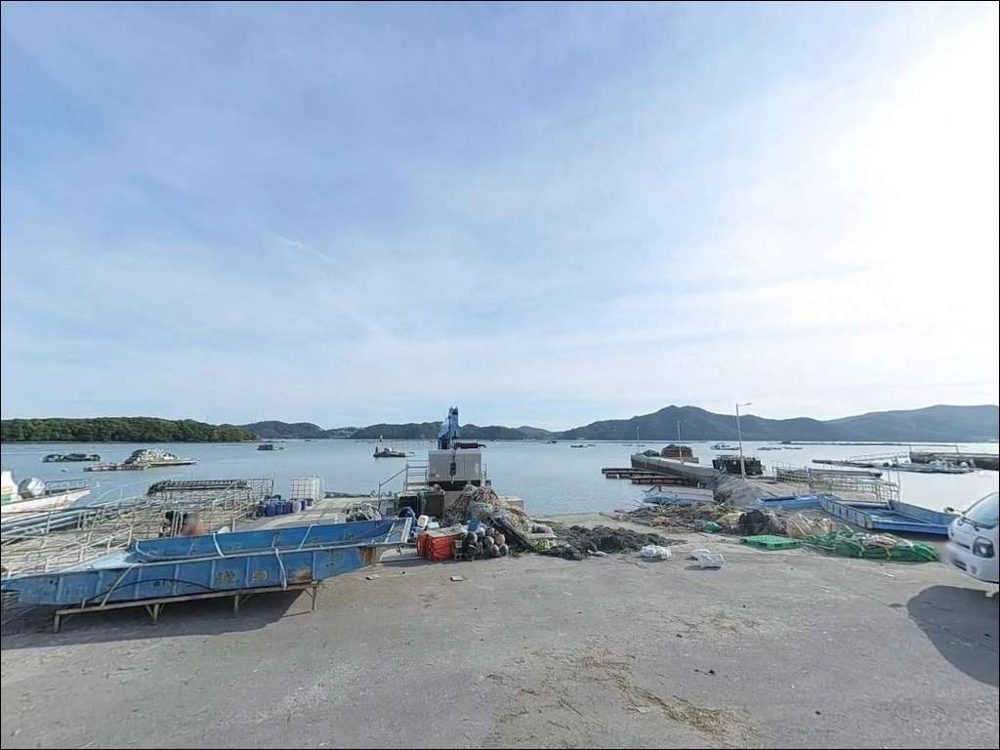
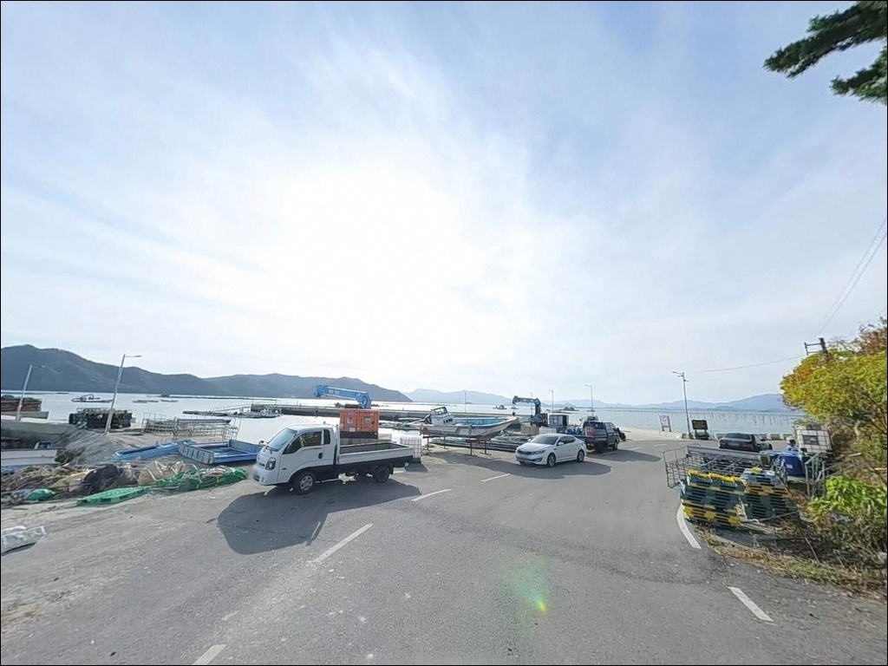
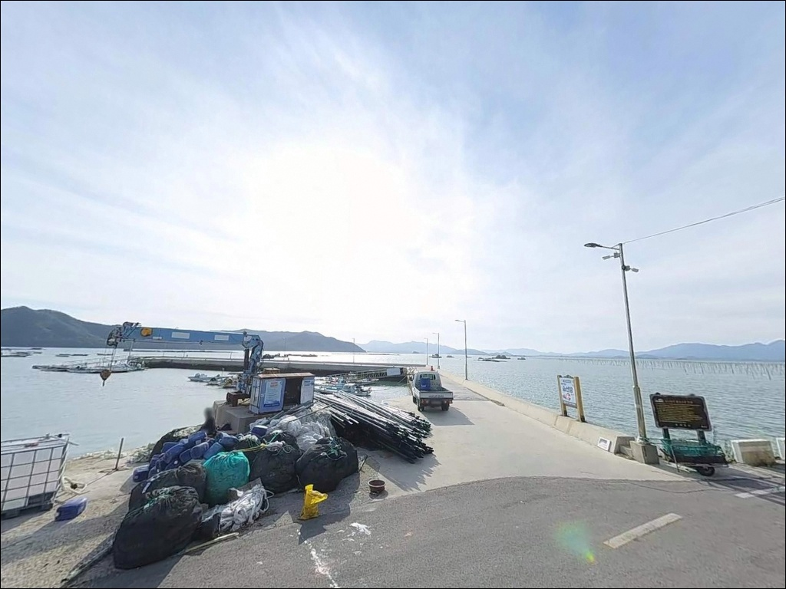
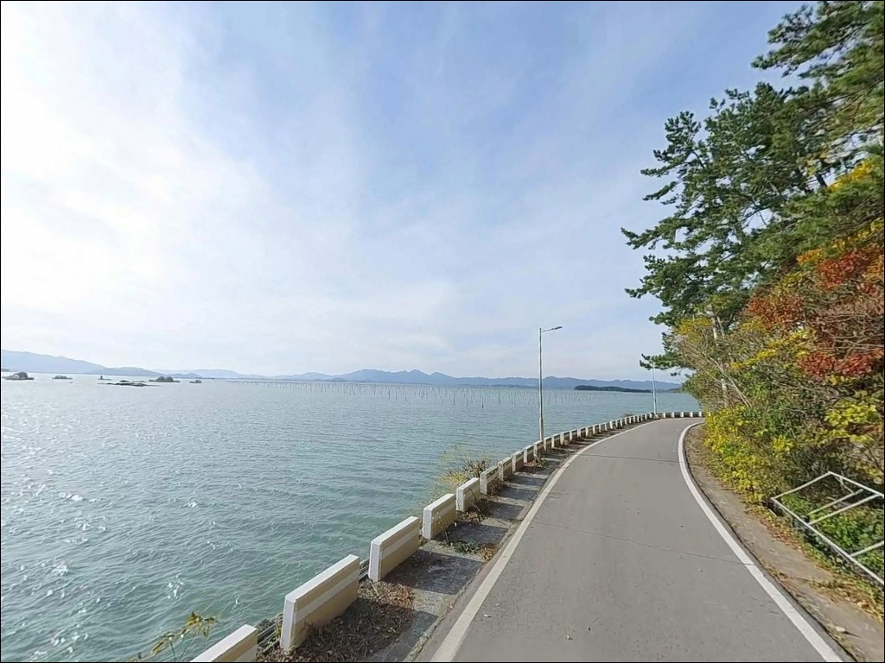
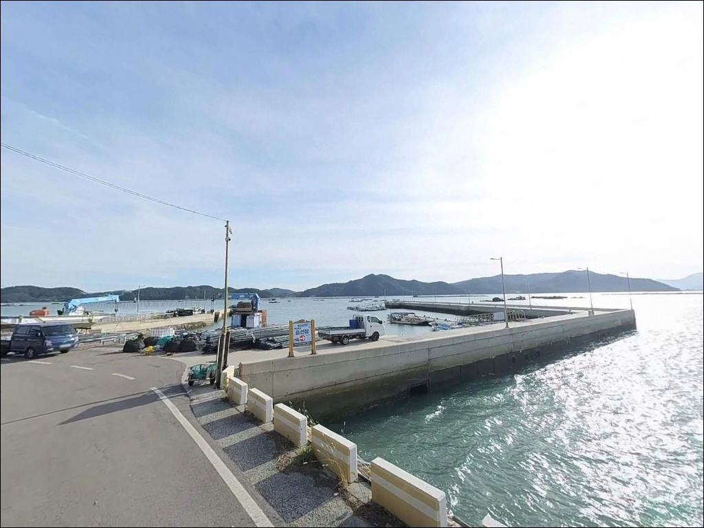
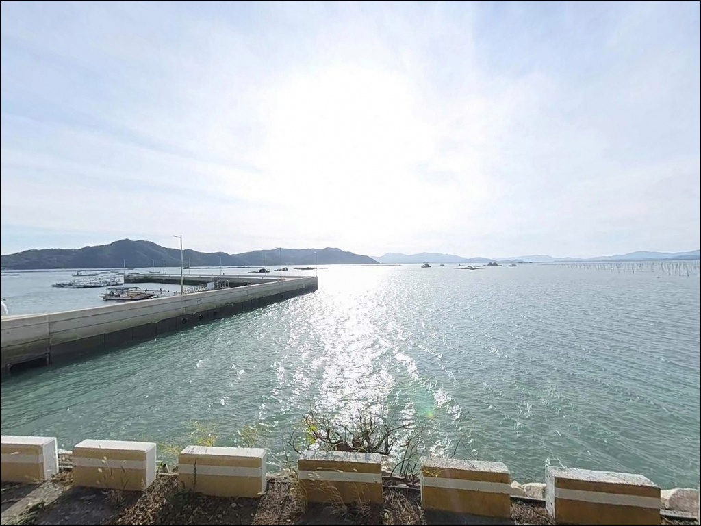
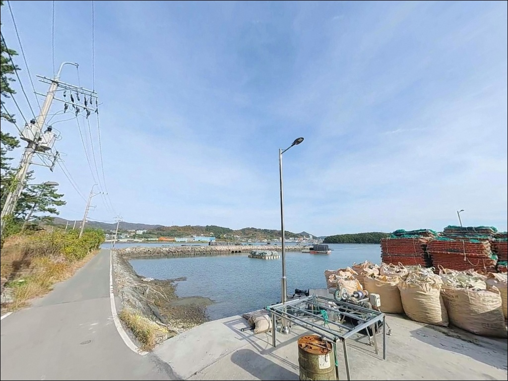

이 페이지에는 광고(제휴 링크 포함)가 있으며, 광고 링크를 통해 구매하면 운영자가 판매 수익 또는 수수료를 받을 수 있습니다. 포인트 사진: 카카오맵 스카이뷰·로드뷰. 이 페이지의 지도·사진 이미지는 카카오맵의 실제 서비스 이미지와 다를 수 있습니다.

마량리방파제
전남 강진군 마량면 마량리 1277-24
마량항 방파제는 방향을 잘못 잡으면
조류에 채비가 쓸려 손맛을 보기 전에
봉돌부터 잃기 쉬운 구조입니다.
고금도와 약산도 사이 수로가 만들어내는
강한 조류 흐름이 외항 쪽으로
직접 유입되는 지형이기 때문입니다.
들물 타이밍에 맞춰 외항 끝단 자리를
선점하는 것이 이 포인트 낚시의 출발점입니다.
전남 강진군 마량면 마량리에 위치한
마량항 방파제는 1971년 국가어항으로 지정된
대규모 연안 낚시 포인트입니다.
까막섬과 고금도가 천연 방파제 역할을 해
내항은 잔잔하고, 외항 방향은
조류 소통이 활발한 구조를 갖추고 있습니다.
원투낚시부터 에깅, 찌낚시까지
낚시 방식을 달리 가져갈 수 있는
복합 포인트이기도 합니다.
이 글은 마량리방파제의
진입 여건, 차박 환경, 낚시 지형 분석,
방식별 공략 조건에 집중합니다.
조황 단정이나 특정 어종 보장은
이 글의 범위에 포함되지 않습니다.

마량항은 강진반도 끝단에 위치하며,
강진읍에서 77번 국도를 타고 마량면 방향으로
이어지는 해안도로(미항로)로 연결됩니다.
포장된 왕복 2차선 도로가 방파제 입구까지
직접 닿아 있어
캠핑카와 대형 차량도 진입이 가능한
수준입니다.
항구 규모가 국가어항 수준으로 조성되어 있어
회차 공간이 넉넉합니다.
주차는 수협 위판장 앞 물양장 주차 공간,
방파제 입구 광장 구역,
해안도로변 여유 공간 등
세 곳을 중심으로 활용하는 편이 좋습니다.
무료 주차가 가능한 구조이며
대형 버스도 회차가 가능한 수준으로
넓게 조성되어 있습니다.
다만 2025년 클린 국가어항 조성사업이 진행 중으로,
동방파제 및 동물양장 구역 일부에
공사 구간이 존재합니다.
방문 전 현장 안내판을 확인하고
차량을 세우는 자리를 정하는 것이
첫 번째 확인 사항입니다.

마량항은 관광미항으로 지정된 항구로,
야간에도 가로등과 경관조명이 상당히 밝습니다.
어선 귀항이 새벽 4시 이전에도 이루어지고,
횟집과 수산시장이 운영되는 구역은
늦은 시간까지 사람 왕래가 이어지는 편입니다.
완전한 프라이버시형 차박보다는
생활형 차박에 가까운 환경입니다.
차박은 방파제 위가 아니라
항 주변 주차 공간과 도로변을 활용하는 방식이
자연스럽습니다.
동방파제 끝단 방향은 항구 중심부보다
민가에서 멀고 조명이 상대적으로 적어
조용한 환경을 원하는 경우 이 방향을
기준으로 자리를 잡는 편이 좋습니다.
차량 통행이 적은 늦은 밤 시간대 기준으로
야간 낚시와 차박을 함께 계획하기에
마량항은 인프라 면에서 불편함이 없는 편입니다.
3월부터 10월 사이 매주 토요일에는
마량놀토수산시장과 토요음악회가 열려
항구 일대가 관광객으로 혼잡해집니다.
이 기간에 방문할 경우 주차와 자리 선점을
조기에 마무리하는 것이 체류 편의를
높이는 방법입니다.

마량항은 낚시 포인트 중에서도
편의시설이 특히 잘 갖춰진 편입니다.
CU 강진마량점(24시간)과 GS25 강진마량점이
도보 거리 안에 있으며,
코리아낚시와 넘도낚시 두 곳의
낚시용품점이 항 내에 위치합니다.
채비 보충이 필요하면 이 두 곳을
이용하는 것이 가장 빠릅니다.
횟집이 20여 곳 항 내에 운영 중이며,
수협 위판장에서는 매일 오전 8시 경매를 통해
당일 경매 수산물을 현장 구매할 수 있습니다.
마량면 내에 주유소, 농협 하나로마트,
우체국, 파출소가 분포해 있어
장기 체류에도 기본 생활 준비가
도보 또는 단거리 차량 이동으로 해결됩니다.
화장실은 공영 주차장 및 수산시장 인근에
현대식으로 다수 운영 중입니다.
응급 상황 발생 시 강진군 보건소 마량지소가
반경 1km 내에 위치하며,
강진의료원은 강진읍 방면으로 약 20km 거리입니다.

마량항 방파제에서 가장 먼저 확인해야 할 것은
물때입니다.
고금도·약산도 사이 수로 방향으로 형성되는
창조류가 최대 4.5노트에 달하는 구간이 있어,
사리 전후에는 외항 쪽 채비 컨트롤이
상당히 어려워집니다.
조금 전후, 또는 들물 초반을 타이밍으로 잡으면
조류를 버티면서 채비를 운용하기
훨씬 수월해집니다.
출조 당일 아침 기상 예보를 다시 확인하는 것도
빠뜨리지 말아야 합니다.
마량면은 남해안에 위치해 기상 변화가 빠른 편이고,
파고와 풍속이 예상보다 높아지면
외항 끝단 자리는 안전 문제로
이어질 수 있습니다.
방파제 외항 테트라포드 구간은
이끼로 미끄러운 구간이 있으므로
미끄럼 방지 신발과 구명조끼는
필수 준비 항목입니다.
수협 경매 시간인 매일 오전 8시에는
물양장 주변으로 차량과 인원이 집중됩니다.
이 시간에 주차 공간을 선점하지 못하면
이동이 번거로워질 수 있으니
야간 또는 이른 새벽 입장 시
자리를 먼저 확보해두는 편이 좋습니다.
출조 전에는 마량항 조황 또는
강진만 낚시 키워드로
최신 정보를 검색해보시기 바랍니다.

마량항은 동방파제, 중방파제(320m),
서방파제(270m) 등 복수의 방파제로 구성됩니다.
이 구조에서 핵심은 방파제 외항 방향입니다.
강진반도 끝단을 기준으로
고금도·약산도 사이 수로가
외항 방향으로 직접 열려 있어,
조류 소통이 가장 활발한 구간이
방파제 끝단과 꺾이는 지점입니다.
방파제 끝단 기준 수심은 10~15m 안팎으로,
강진만 내 다른 포인트보다 깊은 편입니다.
바닥은 외항 쪽으로 잔돌과 암초가 섞인 구조이며,
내항 쪽은 펄·모래 혼합 저질로
성격이 뚜렷하게 나뉩니다.
원투 채비는 내항과 외항 모두에서 운용할 수 있지만,
외항 끝단 방향이
회유 어종 통로 역할을 하는 자리입니다.
내항은 파도 영향이 거의 없는 정온 수역으로,
어선 계류 공간과 선착장이 가깝습니다.
수심이 얕아지는 간조 시에는 채비 운용이
제한되는 구간이 생기지만,
들물이 들어오면 내항도 숭어와 잡어의
활동이 살아나는 구조입니다.
최신 조황은 가기 전에
마량항 방파제 조황 키워드로
꼭 검색해 보시기 바랍니다.

마량항 방파제에서 가장 폭넓게 활용되는 방식은
원투낚시입니다.
외항 끝단과 꺾이는 지점에서
봉돌을 멀리 보내면
도다리·붕장어가 주요 대상이 됩니다.
봄 도다리 시즌에 들물 타이밍을 맞추면
이 포인트의 원투낚시가 가장 활성화되는
구간입니다.
찌낚시는 외항 테트라포드 구간과
방파제 꺾이는 자리를 중심으로 운용합니다.
4월부터 11월 사이 감성돔이
이 구간을 회유하는 시기로,
조류 흐름이 살아 있는 들물 타이밍에
채비 수심을 정확히 맞추는 것이
이 자리의 조과 차이를 만드는 조건입니다.
에깅은 가을 시즌 방파제 전역에서
운용할 수 있습니다.
갑오징어와 주꾸미가 마량항 인근 해역에서
활발히 활동하는 시기이며,
야간에 방파제 난간 구간을 따라
워킹 낚시 방식으로 탐색하면
조과를 기대해볼 수 있습니다.
라이트 루어는 해질녘과 야간에
구조물 주변을 중심으로 공략하는 방식이
이 포인트에 어울립니다.
항구 가로등 아래 먹잇감이 모이는 구조를
활용해 소형 어종을 노리는 접근 방법입니다.

마량항 방파제에서 자리가 여의치 않거나
다른 여건을 찾고 싶다면
가장 먼저 살펴볼 곳은
가우도 낚시공원입니다.
마량항에서 차량으로 14분(약 11km) 거리이며,
강진만 내 조황이 가장 안정적인 포인트로
알려진 곳입니다.
가우도 동·서 출렁다리로 도보 진입이 가능하며,
낚시공원으로 공식 조성되어 있어
발판 여건도 안정적입니다.
마량항 방파제에서 730m 거리에는
마량리 선착장이 별도로 있습니다.
방파제와 해역 조건이 비슷하면서
낚시인이 분산되는 대안 자리로 활용할 수 있습니다.
마량항이 혼잡한 주말 시즌이라면
이 선착장을 먼저 둘러보고
방파제와 분담하는 동선이 효율적입니다.
차박 공간이 마량항 주차장에서 부족할 경우에는
가우도 주변 주차 구역(동쪽 출렁다리 입구)이
대안이 됩니다.
바다 조망이 확보되고
관광지 주차 공간이 넓게 조성되어 있어
마량항 방파제보다 한적한 환경을
원할 때 선택할 수 있는 후보입니다.

원투낚시와 찌낚시를 주력으로 삼는 낚시인이라면
마량항 방파제의 외항 구조는
잘 맞는 지형 조건입니다.
고금도·약산도 수로가 만들어내는 조류 흐름이
끝단 자리에 집중되는 구조이고,
봄 도다리부터 가을 감성돔·에깅 시즌까지
연중 타깃을 다양하게 바꿀 수 있는
포인트이기도 합니다.
반면 물때 계산 없이 사리 전후에 외항에 서면
조류가 강해 채비를 버티기 어렵고,
토요일 마량놀토수산시장 운영 기간에는
주차와 자리 선점이 까다로워집니다.
물때 확인, 주차 시간 선점, 공사 구간 현장 체크,
이 세 가지를 갖추고 방문하면
국가어항급 인프라를 온전히 활용하면서
낚시에 집중할 수 있는 포인트입니다.
24시간 편의점과 낚시점이 걸어서 닿는 거리에 있고,
횟집에서 당일 조획한 어종을 즉시 즐길 수 있어
낚시 후 차에서 하룻밤 머무는 차박 여행자에게도
마량항은 오래 기억에 남는 항구가 됩니다.